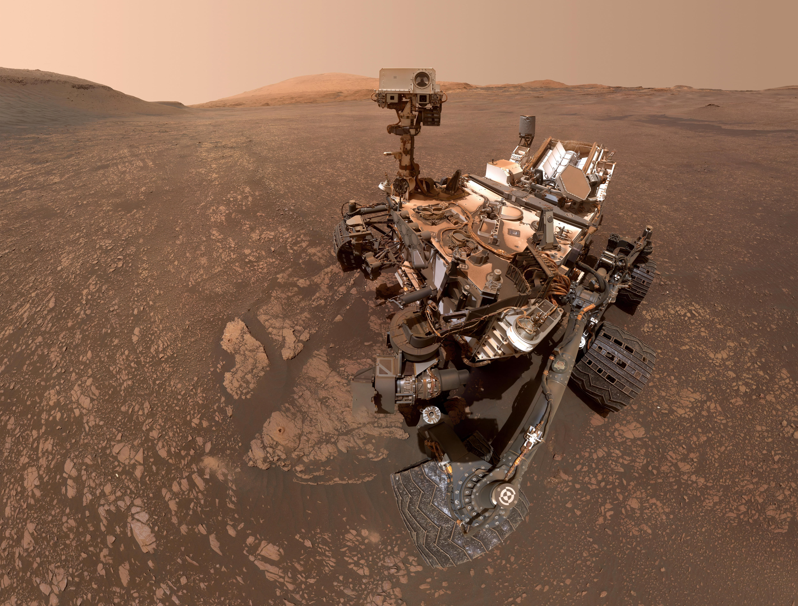

Choose Your Favorite Mars Rover
Curiosity

Opportunity

Spirit

Curiosity is a car-sized rover designed to explore Gale Crater on Mars as part of NASA's Mars Science Laboratory mission. Curiosity was launched from Cape Canaveral on November 26th, 2011, at 15:02 UTC and landed on Aeolis Palus inside Gale on Mars on August 6th, 2012, 05:17 UTC. The Bradbury Landing site was less than 2.4 km (1.5 mi) from the center of the rover's touchdown target after a 560 million km (350 million mi) journey.The rover's goals include an investigation of the Martian climate and geology; assessment of whether the selected field site inside Gale has ever offered environmental conditions favorable for microbial life, including investigation of the role of water; and planetary habitability studies in preparation for human exploration.
Opportunity, also known as MER-B (Mars Exploration Rover – B) or MER-1, and nicknamed "Oppy", is a robotic rover that was active on Mars from 2004 until the middle of 2018. Launched on July 7, 2003, as part of NASA's Mars Exploration Rover program, it landed in Meridiani Planum on January 25, 2004, three weeks after its twin Spirit (MER-A) touched down on the other side of the planet. With a planned 90-sol duration of activity (slightly less than 92.5 Earth days), Spirit functioned until it got stuck in 2009 and ceased communications in 2010, while Opportunity was able to stay operational for 5111 sols after landing, maintaining its power and key systems through continual recharging of its batteries using solar power, and hibernating during events such as dust storms to save power. This careful operation allowed Opportunity to exceed its operating plan by 14 years, 46 days (in Earth time), 55 times its designed lifespan. By June 10, 2018, when it last contacted NASA, the rover had traveled a distance of 45.16 kilometers (28.06 miles).
Spirit, also known as MER-A (Mars Exploration Rover – A) or MER-2, is a robotic rover on Mars, active from 2004 to 2010. It was one of two rovers of NASA's Mars Exploration Rover Mission. It landed successfully within the impact crater Gusev on Mars at 04:35 Ground UTC on January 4, 2004, three weeks before its twin, Opportunity (MER-B), which landed on the other side of the planet. Its name was chosen through a NASA-sponsored student essay competition. The rover became stuck in a "sand trap" in late 2009 at an angle that hampered recharging of its batteries; its last communication with Earth was sent on March 22, 2010.